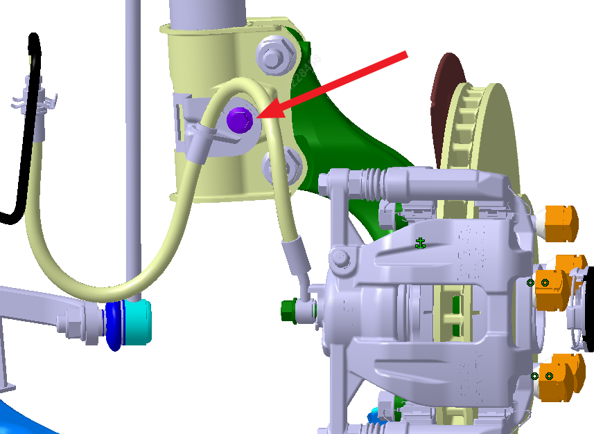
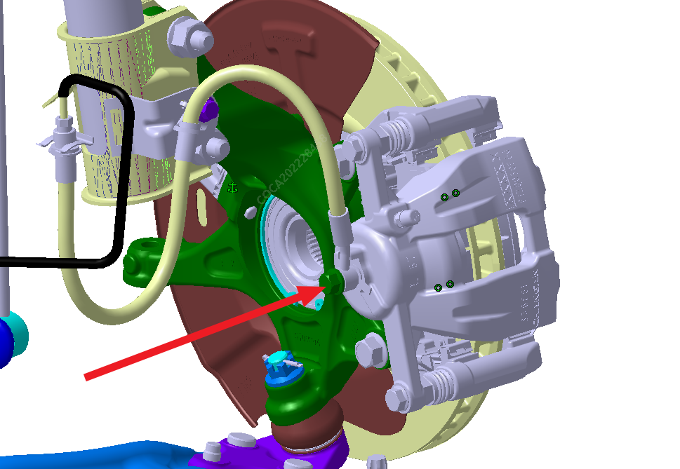
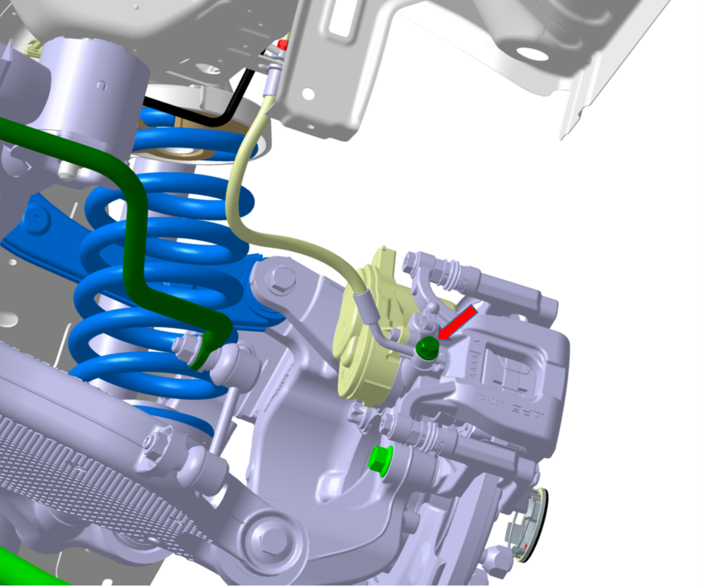
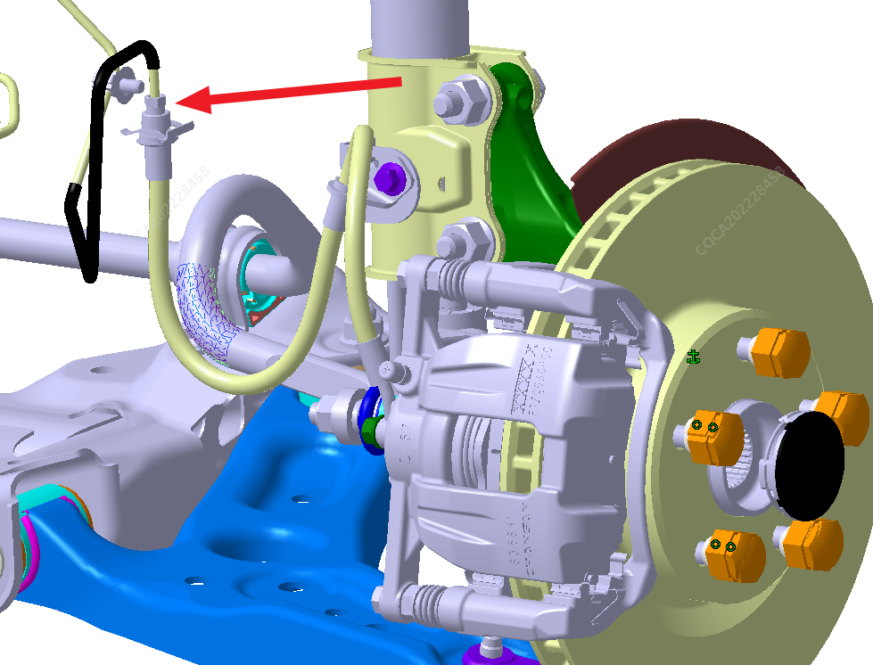
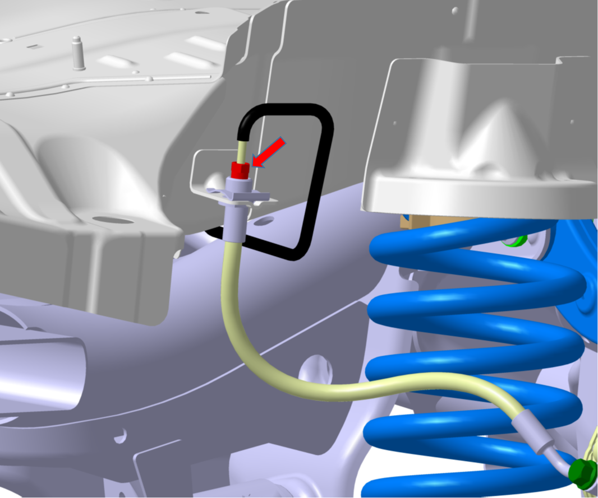
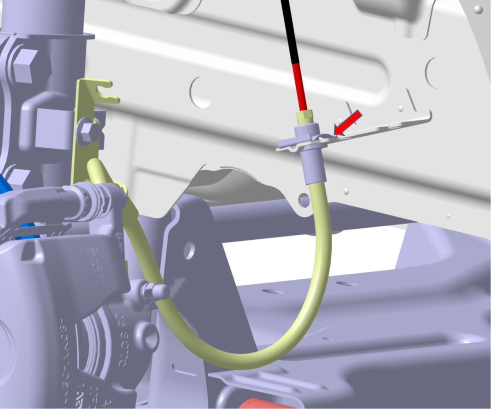
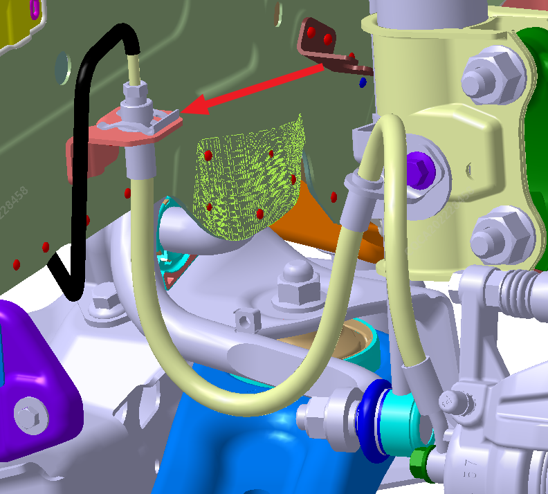
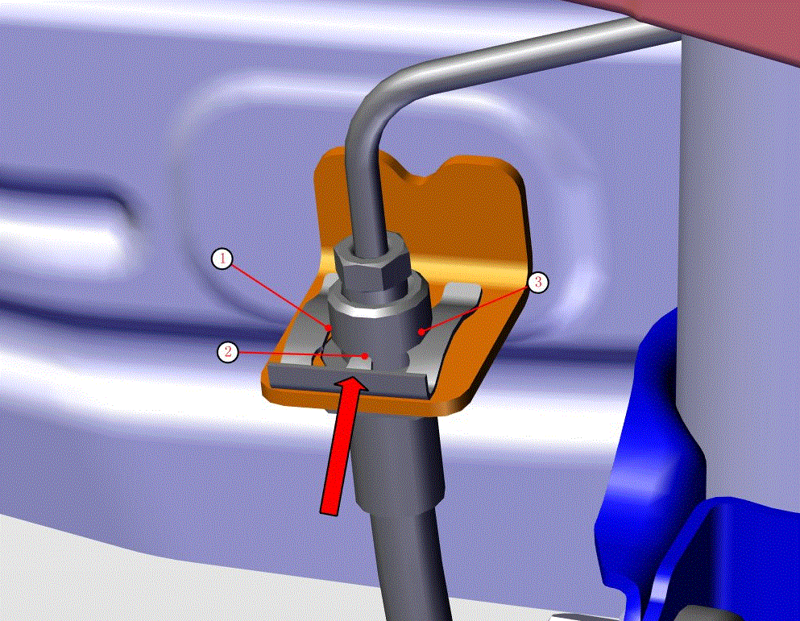

拆卸
将车辆举升至合适高度，参考： 举升
将制动软管与前转向节总成连接的六角法兰面螺栓拆下，工具：M10内六角套筒，扭（23±2）N.m。（仅针对前制动软管拆装，后制动软管无此操作步骤）

将制动软管与制动卡钳连接的螺栓及2个铜垫片拆下，工具：M13内六角套筒，扭力（30±2）N.m。
前制动软管如下图：

后制动软管如下图：

将制动硬管和制动软管连接接头拆开，工具：M10开口扳手，扭力（16±2）N.m。
前制动软管如下图：

后制动软管如下图：

将E型弹性卡取下，制动软管即拆卸完成，工具：平口起。
前制动软管如下图：

后制动软管如下图：

装配
采用六角法兰面螺栓将制动软管中间支架和前支柱连接，并用M10内六角套筒打紧，扭力（23±2）N.m。（仅针对前制动软管拆装，后制动软管无此操作步骤）
采用已拆下的螺栓及换用新铜垫片将制动软管与制动卡钳连接，并用扭力扳手打紧，工具：M13内六角套筒，扭力（30±2）N.m。
将制动软管连接制动硬管端的接头放入车身支架孔内，让其上表面紧贴车身支架下表面，再将E型弹性卡卡上(如图所示E型弹性卡①、②、③三点必须卡入制动软管卡槽内),最后用锤子沿着图示箭头方向将E型弹性卡轻轻敲入卡紧。

将制动硬管接头与制动软管接头对齐拧紧，工具：M10开口扳手，扭力（16±2）N.m。
进行制动系统排气，参考： 制动系统排气